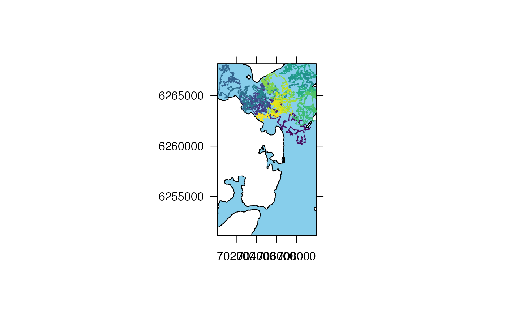
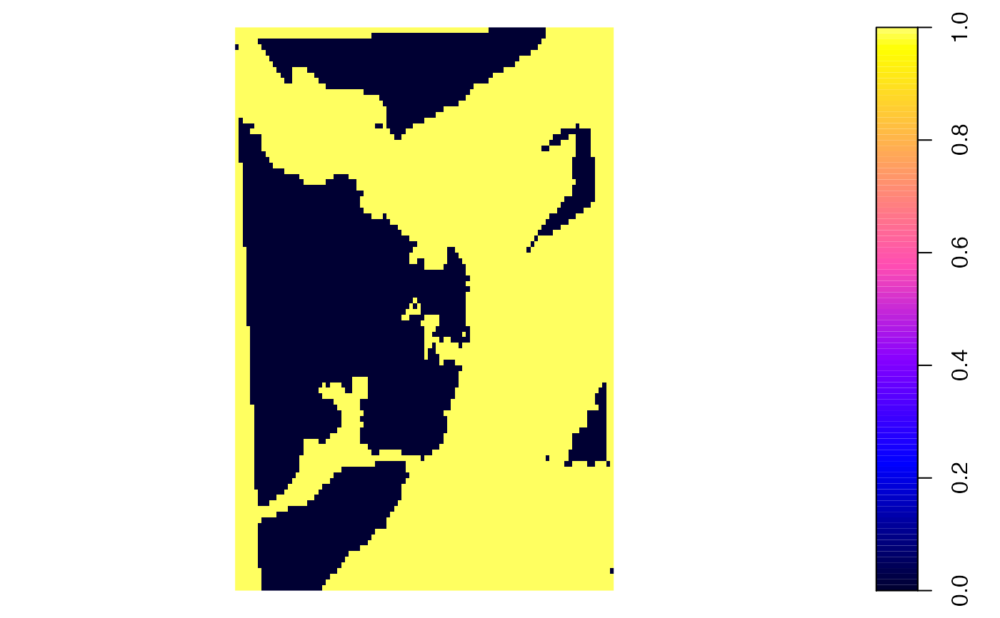
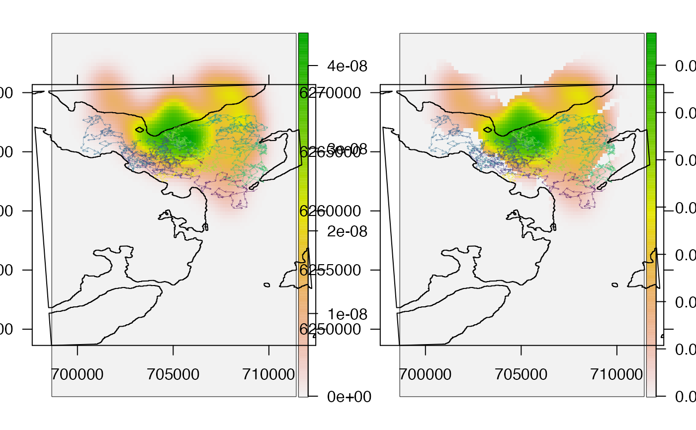
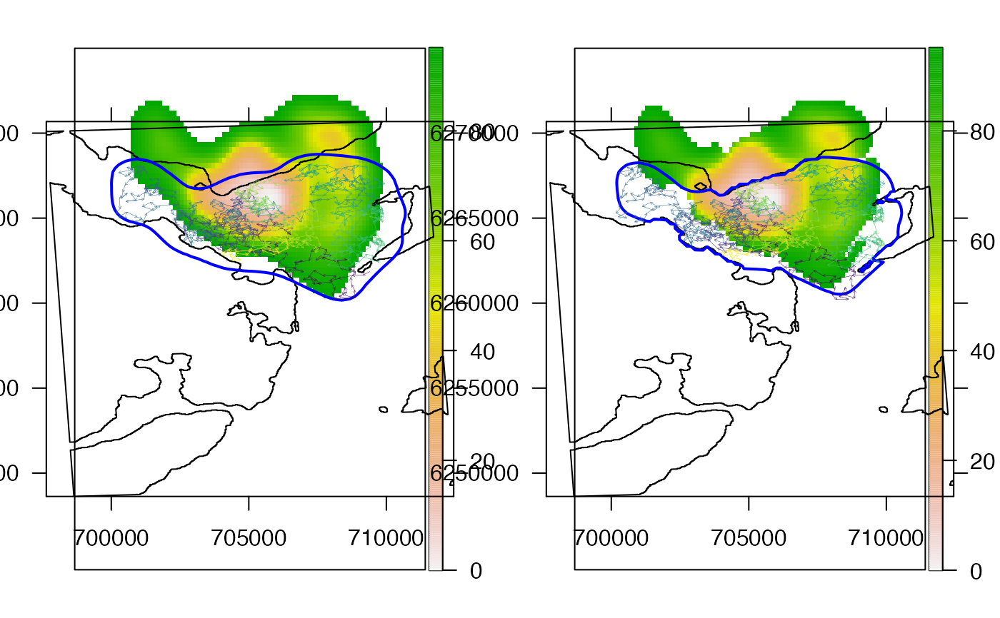

R/kud_tools.R
kud_around_coastline.RdGiven an animal movement path over a gridded surface, kud_around_coastline estimates a `raw' kernel utilisation distribution (from kernelUD) and then processes the distribution to account for barriers to movement, such as coastline. kud_around_coastline_fast is a bare-bones implementation of this function for iterative applications. To implement these functions, the movement path(s) should be supplied as a SpatialPointsDataFrame and the grid over which estimation is implemented as a SpatialPixelsDataFrame with values 0 and 1 defining unsuitable and suitable habitat respectively.
kud_around_coastline(xy, grid, ...) kud_around_coastline_fast(xy, grid, ...)
| xy | A |
|---|---|
| grid | A |
| ... | Additional arguments passed to |
This forum is a useful resource: http://r-sig-geo.2731867.n2.nabble.com/Walruses-and-adehabitatHR-class-estUDm-exclusion-of-non-habitat-pixels-and-summary-over-all-animals-td6497315.html.
kud_around_coastline returns an object of class `estUDm'. This is a list, with one component per animal, of estUD-class objects. The `h' slot of the output (output@h) has been modified so that the method (`meth') is given as `specified'.
kud_around_coastline_fast returns an object of class `RasterLayer'.
Utilisation distributions (UDs) are bivariate probability distributions that describe the probability (density) of locating an individual in any given area at a randomly chosen time. These can be estimated using the kernelUD function. The algorithms implemented by kernelUD function can incorporate simple barriers, but restrictions on the shapes of barriers mean that in many real-world settings (e.g., in areas with complex coastline) barriers cannot be implemented. As a result, a pragmatic (if somewhat unsatisfactory) approach is to post-process the raw utilisation distribution by removing areas in which movement is impossible and then re-normalise the distribution (so that probabilities sum to one). These functions achieve this by implementing the estimation over a grid, which defines whether (1) or not (0) an area is `habitat'. After the estimation of the raw UD across the grid, probability density scores are combined (multiplied) with the habitat suitability score (0, 1) and then renormalised (by dividing by the total score across suitable areas).
To implement these routines, kud_around_coastline is typically the preferable option. kud_around_coastline is a bare-bones implementation of the routines within kud_around_coastline that has is designed to be (marginally) faster (e.g., for iterative applications). This function skips checks on user inputs, assuming that xy and grid have been correctly specified (as a SpatialPointsDataFrame for a specific individual and a SpatialPixelsDataFrame respectively), implements the estimation and returns a raster rather than an `estUDm' object (see Value).
Edward Lavender
#### Set up ## (1) Simulate path for which to compute UD # Focus on a sample of the marine environment off Oban, West Scotland sea <- invert_poly(dat_coast) sea <- raster::crop(sea, update_extent(raster::extent(sea), x_shift = -2500)) prettyGraphics::pretty_map(add_polys = list(x = sea, col = "skyblue"))#># Simulate path n <- 1000 path_ls <- sim_path_sa(n = n, area = sea, sim_step = function(...) stats::rgamma(1, shape = 20, scale = 20), seed = 1, plot = FALSE )#> flapper::sim_path_sa() called (@ 2022-06-17 10:04:31)... #> ... Setting up simulation... #> ... Simulating movement path... #> | | | 0%#> Warning: CRS object has comment, which is lost in output; in tests, see #> https://cran.r-project.org/web/packages/sp/vignettes/CRS_warnings.html#> | | | 1% | |= | 1% | |= | 2% | |== | 2% | |== | 3% | |== | 4% | |=== | 4% | |=== | 5% | |==== | 5% | |==== | 6% | |===== | 6% | |===== | 7% | |===== | 8% | |====== | 8% | |====== | 9% | |======= | 9% | |======= | 10% | |======= | 11% | |======== | 11% | |======== | 12% | |========= | 12% | |========= | 13% | |========= | 14% | |========== | 14% | |========== | 15% | |=========== | 15% | |=========== | 16% | |============ | 16% | |============ | 17% | |============ | 18% | |============= | 18% | |============= | 19% | |============== | 19% | |============== | 20% | |============== | 21% | |=============== | 21% | |=============== | 22% | |================ | 22% | |================ | 23% | |================ | 24% | |================= | 24% | |================= | 25% | |================== | 25% | |================== | 26% | |=================== | 26% | |=================== | 27% | |=================== | 28% | |==================== | 28% | |==================== | 29% | |===================== | 29% | |===================== | 30% | |===================== | 31% | |====================== | 31% | |====================== | 32% | |======================= | 32% | |======================= | 33% | |======================= | 34% | |======================== | 34% | |======================== | 35% | |========================= | 35% | |========================= | 36% | |========================== | 36% | |========================== | 37% | |========================== | 38% | |=========================== | 38% | |=========================== | 39% | |============================ | 39% | |============================ | 40% | |============================ | 41% | |============================= | 41% | |============================= | 42% | |============================== | 42% | |============================== | 43% | |============================== | 44% | |=============================== | 44% | |=============================== | 45% | |================================ | 45% | |================================ | 46% | |================================= | 46% | |================================= | 47% | |================================= | 48% | |================================== | 48% | |================================== | 49% | |=================================== | 49% | |=================================== | 50% | |=================================== | 51% | |==================================== | 51% | |==================================== | 52% | |===================================== | 52% | |===================================== | 53% | |===================================== | 54% | |====================================== | 54% | |====================================== | 55% | |======================================= | 55% | |======================================= | 56% | |======================================== | 56% | |======================================== | 57% | |======================================== | 58% | |========================================= | 58% | |========================================= | 59% | |========================================== | 59% | |========================================== | 60% | |========================================== | 61% | |=========================================== | 61% | |=========================================== | 62% | |============================================ | 62% | |============================================ | 63% | |============================================ | 64% | |============================================= | 64% | |============================================= | 65% | |============================================== | 65% | |============================================== | 66% | |=============================================== | 66% | |=============================================== | 67% | |=============================================== | 68% | |================================================ | 68% | |================================================ | 69% | |================================================= | 69% | |================================================= | 70% | |================================================= | 71% | |================================================== | 71% | |================================================== | 72% | |=================================================== | 72% | |=================================================== | 73% | |=================================================== | 74% | |==================================================== | 74% | |==================================================== | 75% | |===================================================== | 75% | |===================================================== | 76% | |====================================================== | 76% | |====================================================== | 77% | |====================================================== | 78% | |======================================================= | 78% | |======================================================= | 79% | |======================================================== | 79% | |======================================================== | 80% | |======================================================== | 81% | |========================================================= | 81% | |========================================================= | 82% | |========================================================== | 82% | |========================================================== | 83% | |========================================================== | 84% | |=========================================================== | 84% | |=========================================================== | 85% | |============================================================ | 85% | |============================================================ | 86% | |============================================================= | 86% | |============================================================= | 87% | |============================================================= | 88% | |============================================================== | 88% | |============================================================== | 89% | |=============================================================== | 89% | |=============================================================== | 90% | |=============================================================== | 91% | |================================================================ | 91% | |================================================================ | 92% | |================================================================= | 92% | |================================================================= | 93% | |================================================================= | 94% | |================================================================== | 94% | |================================================================== | 95% | |=================================================================== | 95% | |=================================================================== | 96% | |==================================================================== | 96% | |==================================================================== | 97% | |==================================================================== | 98% | |===================================================================== | 98% | |===================================================================== | 99% | |======================================================================| 99% | |======================================================================| 100%... flapper::sim_path_sa() call completed (@ 2022-06-17 10:04:33) after ~0.04 minutes.## (2) Define path as a SpatialPointsDataFrame (SpatialPoints is not allowed) path <- sp::SpatialPointsDataFrame( path_ls$xy_mat, data = data.frame(ID = factor(rep(1, nrow(path_ls$xy_mat)))), proj4string = raster::crs(dat_coast)) ## (3) Define grid over which to implement estimation # ... The grid needs to be sufficiently small to capture the coastline # ... reasonably while being large enough to enable calculation # ... of the home range. r <- raster::raster(raster::extent(dat_coast), nrows = 100, ncols = 100) raster::values(r) <- 0 r <- raster::mask(r, dat_coast, updatevalue = 1) habitat <- methods::as(r, "SpatialPixelsDataFrame") sp::plot(habitat)#### Example (1) Implement estimation and processing ## Estimate raw UD ud_raw <- adehabitatHR::kernelUD(xy = path, grid = habitat)#> Warning: CRS object has comment, which is lost in output; in tests, see #> https://cran.r-project.org/web/packages/sp/vignettes/CRS_warnings.html#> Warning: CRS object has comment, which is lost in output; in tests, see #> https://cran.r-project.org/web/packages/sp/vignettes/CRS_warnings.html# Object is of class estUDm, which is a list of estUD objects # The outputs for each animal can be accessed by indexing ud_raw[[1]]#> ********** Utilization distribution of an Animal ************ #> #> Type: probability density #> Smoothing parameter estimated with a href parameter #> This object inherits from the class SpatialPixelsDataFrame. #> See estUD-class for more information #># Check smoothing parameters ud_raw[[1]]@h#> $h #> [1] 632.7372 #> #> $meth #> [1] "href" #>## Estimate raw UD and post-process ud_pro <- kud_around_coastline(xy = path, grid = habitat)#> Warning: CRS object has comment, which is lost in output; in tests, see #> https://cran.r-project.org/web/packages/sp/vignettes/CRS_warnings.html#> Warning: CRS object has comment, which is lost in output; in tests, see #> https://cran.r-project.org/web/packages/sp/vignettes/CRS_warnings.html#> Warning: CRS object has comment, which is lost in output; in tests, see #> https://cran.r-project.org/web/packages/sp/vignettes/CRS_warnings.html#> Warning: CRS object has comment, which is lost in output; in tests, see #> https://cran.r-project.org/web/packages/sp/vignettes/CRS_warnings.html# The same type of object is returned ud_pro[[1]]#> ********** Utilization distribution of an Animal ************ #> #> Type: probability density #> Smoothing parameter estimated with a specified parameter #> This object inherits from the class SpatialPixelsDataFrame. #> See estUD-class for more information #># Smoothing parameters have been modified ud_pro[[1]]@h#> $h #> [1] 0 #> #> $meth #> [1] "specified" #>## Compare plots # ... Notice that the processed version doesn't 'bleed' onto land # ... and the scale differs due to the re-normalisation ud_raw_r <- raster::raster(ud_raw[[1]]) ud_pro_r <- raster::raster(ud_pro[[1]]) pp <- graphics::par(mfrow = c(1, 2)) prettyGraphics::pretty_map(add_rasters = list(x = ud_raw_r), add_polys = list(x = dat_coast), add_paths = list(x = path, col = viridis::viridis(n), lwd = 0.25, length = 0.02) )#>prettyGraphics::pretty_map(add_rasters = list(x = ud_pro_r), add_polys = list(x = dat_coast), add_paths = list(x = path, col = viridis::viridis(n), lwd = 0.25, length = 0.02) )#>graphics::par(pp) #### Further analysis can be implemented as usual # For example we can compute the home range contours from the UD # ... using adehabitatHR::getvolumeUD(). In practice, this converts from the # ... probability density scale to a more intuitive % home range scale. # Get volume vol_raw <- adehabitatHR::getvolumeUD(ud_raw, standardize = TRUE)#> Warning: CRS object has comment, which is lost in output; in tests, see #> https://cran.r-project.org/web/packages/sp/vignettes/CRS_warnings.html#> Warning: CRS object has comment, which is lost in output; in tests, see #> https://cran.r-project.org/web/packages/sp/vignettes/CRS_warnings.html#> Warning: CRS object has comment, which is lost in output; in tests, see #> https://cran.r-project.org/web/packages/sp/vignettes/CRS_warnings.html#> Warning: CRS object has comment, which is lost in output; in tests, see #> https://cran.r-project.org/web/packages/sp/vignettes/CRS_warnings.html#> Warning: CRS object has comment, which is lost in output; in tests, see #> https://cran.r-project.org/web/packages/sp/vignettes/CRS_warnings.html#> Warning: CRS object has comment, which is lost in output; in tests, see #> https://cran.r-project.org/web/packages/sp/vignettes/CRS_warnings.html# Rasterise vol_raw_r <- raster::raster(vol_raw[[1]]) vol_pro_r <- raster::raster(vol_pro[[1]]) # For neatness on the plot, it is convenient to exclude areas beyond 95 % vol_raw_r[vol_raw_r[] > 95] <- NA vol_pro_r[vol_pro_r[] > 95] <- NA # Plot pp <- graphics::par(mfrow = c(1, 2)) prettyGraphics::pretty_map(add_rasters = list(x = vol_raw_r), add_polys = list(list(x = dat_coast), list(x = ver_raw, border = "blue", lwd = 2)), add_paths = list(x = path, col = viridis::viridis(n), lwd = 0.25, length = 0.02) )#>prettyGraphics::pretty_map(add_rasters = list(x = vol_pro_r), add_polys = list(list(x = dat_coast), list(x = ver_pro, border = "blue", lwd = 2)), add_paths = list(x = path, col = viridis::viridis(n), lwd = 0.25, length = 0.02) )#>